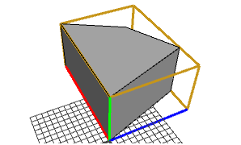
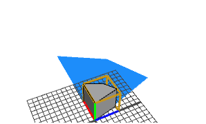
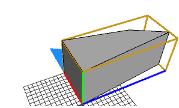

s operation
Synopsis
s(float xSize, float ySize, float zSize)
Parameters
- xSize (float), ySize (float), zSize (float)
Sizes of the new scope dimensions.
The s operation sets the size vector scope.s.
The relative operator ' permits a convenient notation relative to the current shape's scope size:
s('sx,0,0) is equivalent to s(sx*scope.sx, 0, 0)
Negative sizes result in mirroring along the corresponding axes; this means the normals are inverted!
Related
- r operation
- rotate operation
- t operation
- reverseNormals operation
- translate operation
- scope attribute
Examples
Basic Usage
 |
Lot--> extrude(10)The initial shape with its scope highlighted. |
 |
Lot--> extrude(10) s(5,5,5)Here, all scope sizes are set to the absolute value 5. |
 |
Lot-->
extrude(10)
s('0.5,'1,'1.5)
This example demonstrates the usage of the relative operator '. The s operation above is equivalent to
s(0.5*scope.sx,scope.sy,1.5*scope.sz) |
Copyright ©2008-2019 Esri R&D Center Zurich. All rights reserved.